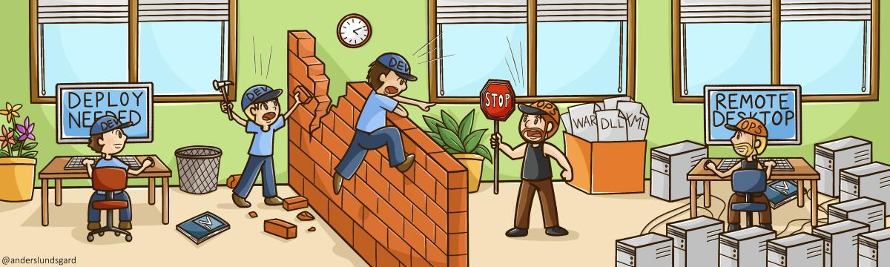

This section is by far not a complete recipe on how to achieve CD. But it still lists the main topics with brief descriptions. Also it provides references for further reading. There are two main areas to focus on in order to achieve CD.
The idea with CD is to create as short a feedback loop as possible. From the idea to the hands of the users. Feedback will then trigger new ideas. Two of the major problems with bad performance in development are:
Do empower the ones that build the product. The engineers. They take responsibility from writing the code to making it work in production. So what about for example the operations personnel? They are still extremely necessary. But instead of having the application up and running they should provide the engineers with tools and expertise in infrastructure questions. Engineers ask for help when they need it. Operations is just one type of resource out of many, such as the managers, QAs, architects, etc...
It is important that everyone independent of their profession have a clear view of what is happening. Metrics should be visualized for everyone. Metrics include:
CD makes motivated employees. To get a fast response of what you are doing is amazingly effective.
Also, mastering your own time has been proven to have a very big impact on how to keep us motivated.
The term DevOps has been coined to highlight the often existing wall between developers (Dev) and operations (Ops). But the DevOps wall is often not the only wall. Avrian Mordo is talking about all of the walls and Dev Centric Culture in his great article about Continuous Delivery.
The first thing engineers need to master in order to do CD is TDD. Many companies doing CD agree with that. Why? - Code that is going into the version control system (with Continuous Deployment) directly will be deployed to production. Therefore it must be tested as early as possible. With TDD you write the test before the code, running the tests locally and when they pass the test the (reviewed) code goes into the VCS.
So, having good quality early is one big benefit. Fewer bugs. Automated tests that cheaply can be executed to constantly verify quality.
Another big advantage is the ease of maintaining the code. Engineers do not have to split into teams to handle their code. An engineer writes the code (with attached tests) that is easy to maintain both for herself and for anyone else.
A deeper explanation of TDD can be found at Wikipedia. Note: Although it is good to understand the principles of TDD you must practice it to fully understand its strengths. Developers being used to doing TDD usually never want to go back to not doing it.
The Deployment Pipeline (DP) is a way to move all of the manual steps in the build, test and deploy process in to an automated assembly line. Previously teams who were getting close to a release had a manual regression-phase for days or weeks. After that it was past another week or two before it was dedicated and ready for planning and exercising for the production release.
With the DP all of these manual steps are converted into various kinds of coded tests and installation scripts. All manual steps are checked in to VCS and can automatically be executed several times a day. This is usually done after every code change.
The DP not only removes the need for boring manual tests and release plan meetings. It also makes the whole delivery process much safer. A DP is of course a must in order to do Continuous Delivery. Requiring manual installations several times a day is not an option.
The video clip (only 2 min) is a great illustration of the Deployment Pipeline.
Continuous Integration (CI) is mainly about improving the ability for engineers to collaborate in the same codebase.
The Key practices are
For a more detailed explanation of CI please read Martin Fowlers article about CI. It is really good so I won't replicate it all here.
Configuration Management (CM) is in short to version everything. All of the stuff that is software should be stored in a single version control. Software including for example:
If your server is burned down you should be able to get a new installation up and running by:
Steps 1 to 4 is often completed in an hour or two. But if the last step takes days or weeks it is caused by bad CM.
When working with Continuous Integration you are committing to the main line every single day. That might not seem to be a good idea if the new feature might need weeks or months to be completed. In these cases Feature Toggle (FT) or Branch By Abstraction (BBA) could be used.
With FT or BBA you apply a condition into your code that initially hides the ongoing work of the new feature. This condition could be as simple as an if/else statement. When the new feature is ready the statement is removed for all or at first for just a selection of all users.
In the video clip Martin Fowler and Mike Manson are discussing why you should avoid feature branches and instead focus on collaborating on the main line (trunk, master) in the VCS.
A/B testing is a technique about gathering feedback from real users. It is commonly used in web development, online marketing, and other forms of advertising to do experiments with two variants (A and B). A is the current version in production. The B version includes a change that hopefully provides more value. So the A/B test is an experiment to verify a hypothesis. If B turns out to be the better it probably replaces the current A version.
One simple example of an A/B test is changing the color of the buy-button or moving it from the bottom to the top of the page. The hypothesis could have been: I think more people will click on the buy-button if it is placed at the top right of the page.
Most systems can afford a downtime for about 1 hour 4 times a year. So if you are deploying a new version to production every quarter most customers won't even notice it.
With Continuous Delivery and deployments as regular as daily, downtime is not an option. To run many parallel web servers with different versions of the software is usually no problem. But if the hosted application for example relies on permanent data in a relational database, the scaling possibilities are much harder. But they are definitely possible!
At first be sure you are versioning your database scripts. Preferably this is done with some versioning tool for databases. See for example Liquibase, RoundhousE or Flyway. Next be sure your incremental changes to the database schema are backward/forward compatible. That means you can run two different versions of the application against the same database schema.